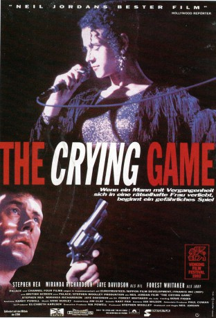

#10223 The Crying Game
Auszeichnungen: 1 Oscars gewonnen für 5 Oscars nominiert 1 BAFTA-Awards gewonnen
 
 IMDB-Wertung: 7.3 / 10
IMDB-Wertung: 7.3 / 10  Metascore: 90
Metascore: 90 
Mit Oscars und vielen anderen Auszeichnungen ausgestattetes Drama vom irischen Regisseur Neil Jordan. Ein einfacher britischer Soldat wird am Rande eines Volksfestes von der IRA entführt, als er sich auf die attraktive Jody einlässt. Während der Geiselschaft freundet er sich mit seinem Wächter Fergus an, der ihm einen innigen Wunsch erfüllen soll.
Jahr: 1992
Dauer: 111 Minuten
FSK: 16
Land: England Studio: Senator FilmTonspuren: DD2.0 - ,
Untertitel: Deutsch,
Auflösung: 1080p (1920x804) Größe: 6522 MB
Genre: Thriller, Drama, Krimi, Liebe
Regisseur: Neil Jordan
Drehbuch: Neil Jordan
Soundtrack: Anne Dudley
Darsteller:
 Forest Whitaker als Jody
Forest Whitaker als Jody Miranda Richardson als Jude
Miranda Richardson als Jude Stephen Rea als Fergus
Stephen Rea als Fergus Adrian Dunbar als Maguire
Adrian Dunbar als Maguire- Joe Savino als Eddie
- Jaye Davidson als Dil
- Andrée Bernard als Jane
 Jim Broadbent als Col
Jim Broadbent als Col Ralph Brown als Dave
Ralph Brown als Dave- Tony Slattery als Deveroux
- Ray De-Haan als Security Man 1
- Charles Mandracchia als Bouncer (uncredited)
- Breffni McKenna als Tinker
- Birdy Sweeney als Tommy
- Jack Carr als Franknum
- Josephine White als Bar Performer 1
- Shar Campbell als Bar Performer 2
- Bryan Coleman als Judge
- David Crionelly als Security Man 2
Datei: X:\1992\Crying Game, The (1992, FSK16, 1920x804).mkv seit 25.12.2018
Festplatte: HD 1992-1995
 Es gibt insgesamt 57 Filme in der Gruppe '1992'
Es gibt insgesamt 57 Filme in der Gruppe '1992'